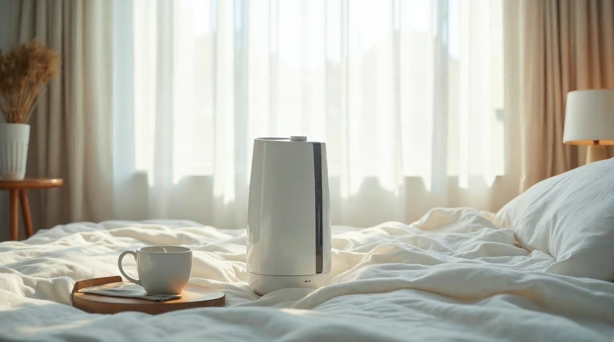
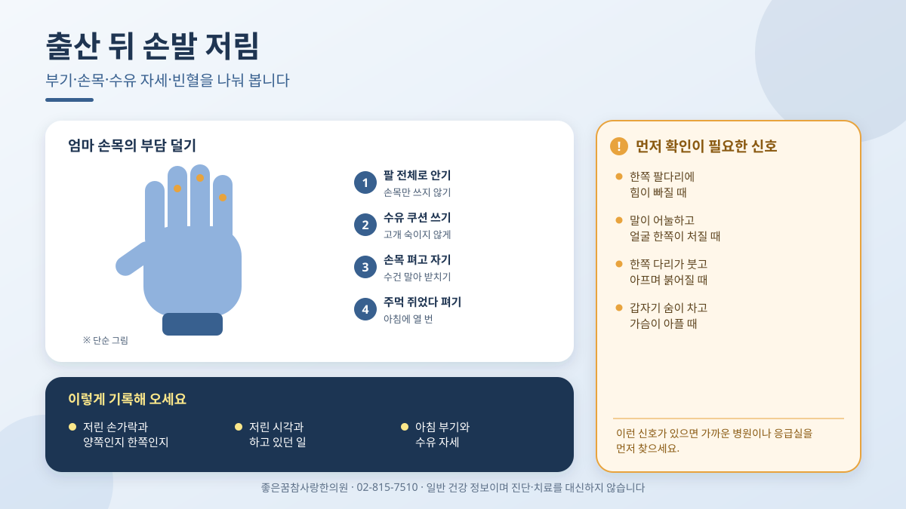

이종호 한의사 감수좋은꿈참사랑한의원 대표원장 (한의사 면허번호 19769)발행 2026-11-26 · 수정 2026-11-26
이 글의 차례
새벽 수유를 하려고 아기를 안아 올리는데 손가락 끝이 찌릿하고 둔합니다. 주먹을 쥐었다 폈다 몇 번 하고 나서야 감각이 돌아옵니다. 아침에 일어나 바닥에 발을 디디면 발바닥이 시리고 저려서, 한여름인데도 양말을 찾게 됩니다.
출산 뒤 손발이 저리다는 이야기는 진료실에서 자주 듣습니다. 아기를 안고, 기저귀를 갈고, 젖병을 씻느라 손을 쉴 틈이 없는데 손가락이 둔해지니 일상이 더 버겁게 느껴집니다. 어르신들이 산후풍이라며 걱정하시는 말을 듣고 더 불안해지는 분도 계십니다.
산후 손발 저림은 한 가지 이유로만 생기지 않습니다. 출산 뒤 남은 부기, 아기를 안는 손목과 수유 자세, 출혈과 빈혈, 부족한 잠, 차가운 환경이 서로 겹쳐 나타나는 경우가 많습니다. 그래서 어디가, 언제, 어떻게 저린지를 나눠 보는 것이 출발점입니다.
이 글에서는 산후 손발 저림이 왜 생기는지, 저림의 모양으로 이유를 어떻게 짐작하는지, 확인이 필요한 경우는 무엇인지, 일상에서는 어떻게 지내면 좋은지를 정리했습니다. 산부인과 검진은 그대로 이어 가면서 한의원에서 함께 살필 수 있는 부분도 말씀드리겠습니다.
왜 출산 뒤에는 손발이 저리기 쉬울까요
임신 중 몸에는 평소보다 많은 물이 머뭅니다. 출산 뒤 이 물이 빠지는 데는 몇 주가 걸리는데, 그동안 손목과 발목 같은 좁은 통로가 붓기에 눌리면 그 안을 지나는 신경이 압박을 받아 저림이 생길 수 있습니다. 아침에 특히 손이 붓고 저린 것은 밤새 고인 물 때문인 경우가 많습니다.
출산 뒤에는 손목을 정말 많이 씁니다. 아기를 안아 올리고, 목을 받치고, 수유하며 한 자세로 오래 버티는 동작은 손목을 꺾은 채 힘을 주게 만듭니다. 이런 동작이 하루에도 수십 번 반복되면 손목 안쪽의 신경 통로가 좁아져 엄지에서 약지까지 저리는 느낌이 생기기 쉽습니다.
수유 자세도 영향을 줍니다. 고개를 숙이고 어깨를 앞으로 만 채 오래 수유하면 목과 어깨 근육이 굳고, 목에서 팔로 내려가는 신경이 당겨지며 팔과 손이 저릴 수 있습니다. 이 경우에는 손뿐 아니라 어깨와 팔까지 무겁고 저린 느낌이 함께 오는 경우가 많습니다.
출산 때 출혈이 많았거나 빈혈이 있으면 손발 끝까지 가는 피의 흐름이 약해져 손발이 차고 저리게 느껴지기도 합니다. 여기에 밤중 수유로 잠이 쪼개지고, 끼니를 거르며 지내다 보면 몸의 회복이 더뎌져 저림과 시림이 오래 남기도 합니다.
저리는 자리와 시간으로 이유를 짐작해 봅니다
손발 저림은 어디가, 언제 저린지에 따라 짐작할 수 있는 이유가 달라집니다. 진료실에서 자세히 여쭙는 것도 그래서입니다.
- 엄지에서 약지까지 저리고 새벽이나 아침에 심한 경우: 손목 안쪽 신경 통로의 압박
- 새끼손가락과 약지 쪽이 저리고 팔꿈치를 오래 굽히면 심한 경우: 팔꿈치 쪽 신경
- 목과 어깨가 굳고 팔 전체가 저리는 경우: 목과 어깨의 긴장
- 손발이 모두 차고 저리며 쉽게 지치는 경우: 빈혈, 피로, 몸의 냉기
- 아침에 손발이 붓고 뻣뻣하며 저린 경우: 남은 부기
- 손목과 엄지 쪽이 아프고 엄지를 움직일 때 통증이 심한 경우: 손목 힘줄의 염증
이 가운데 엄지 쪽 손목 통증은 아기를 안는 엄마에게 아주 흔해서 흔히 엄마 손목이라고도 부릅니다. 저림보다 통증이 더 크다면 손목 힘줄을 먼저 살펴봅니다. 여러 이유가 함께 있는 경우도 많아서 한 가지로 단정하지 않고 하나씩 나눠 봅니다.
산후풍이라는 말, 어떻게 이해하면 될까요
어르신들은 출산 뒤 몸이 시리고 저리며 바람이 드는 것 같은 느낌을 산후풍이라고 부르셨습니다. 한의학에서도 출산 뒤 기운과 피가 크게 빠져나간 상태에서 찬 기운이 몸에 닿아 생기는 불편을 이렇게 설명해 왔습니다. 진찰할 때 몸의 상태를 이해하는 전통적인 표현이라고 보시면 됩니다.
다만 산후풍이라는 말이 병명처럼 쓰이면서 지나치게 겁을 먹는 분도 계십니다. 출산 뒤 손발이 저리고 시린 것은 흔한 일이고, 대부분은 부기가 빠지고 잠과 식사가 자리를 잡으며 서서히 가벼워지는 흐름을 보입니다. 그 사이에 몸을 차갑게 두지 않고 무리하지 않는 것이 중요합니다.
산후풍이라고 여기고 지나치기보다는, 빈혈이나 갑상선 같은 다른 이유가 함께 있지 않은지 산부인과나 내과 검사로 확인해 보는 것도 좋습니다. 이유를 하나씩 나눠 보면 막연한 불안이 조금 줄어듭니다.
산후 손발 저림, 흔히 헷갈리는 것
첫째, 저리면 곧 피가 안 통하는 것이라고 생각하시는 경우입니다. 실제로는 신경이 눌리거나 당겨져 생기는 저림이 훨씬 많습니다. 손을 주무르기만 하기보다 손목과 목의 자세를 바꾸는 쪽이 더 도움이 되는 경우가 있습니다.
둘째, 찬물에 손을 대면 큰일 난다고 여겨 물 쓰는 일을 모두 피하시는 경우입니다. 차가운 물에 손을 오래 담그는 것은 피하는 것이 좋지만, 미지근한 물로 씻고 바로 물기를 닦아 따뜻하게 해 주면 충분합니다. 지나치게 덥게 지내다 땀을 많이 흘리고 그 땀이 식으며 오히려 시린 경우도 있습니다.
셋째, 시간이 지나면 저절로 나을 테니 참고 지내시는 경우입니다. 많은 경우 몇 주에서 몇 달 사이에 가벼워지지만, 손에 힘이 빠지거나 물건을 자주 떨어뜨린다면 신경 압박이 심해진 것일 수 있어 진료를 받아 보시는 것이 좋습니다.

계절과 집 안 환경도 함께 살펴 주세요
겨울에 출산하셨다면 난방을 세게 틀고 두꺼운 옷을 입다가 땀을 많이 흘리기 쉽습니다. 땀에 젖은 옷이 식으면 오히려 몸이 차가워지고 손발이 더 시리게 느껴집니다. 실내는 너무 덥지 않게, 땀이 나면 마른 옷으로 바로 갈아입는 편이 좋습니다.
여름에 출산하셨다면 에어컨 바람이 몸에 직접 닿지 않도록 방향을 돌리고, 얇은 긴소매와 양말로 손발을 덮어 주세요. 찬 바닥에 맨발로 오래 서 있지 않도록 실내화를 신고, 찬 음료는 한꺼번에 많이 드시지 않는 것이 좋습니다.
손빨래나 설거지처럼 손을 물에 오래 담그는 일은 고무장갑을 끼고, 미지근한 물을 쓰세요. 일을 마친 뒤에는 손을 잘 말리고 핸드크림을 발라 주면 손끝이 덜 시립니다.
가족이 함께 덜어 줄 수 있는 것
산후 손발 저림은 손목과 팔을 쉬게 해 주는 시간이 있어야 가벼워집니다. 아기를 오래 안고 달래야 하는 시간, 목욕시키는 시간처럼 손목에 힘이 많이 드는 일은 가족이 나눠 맡아 주시면 좋습니다.
밤중 수유 가운데 한 번을 대신해 주거나, 젖병 씻기와 빨래를 맡아 주는 것도 엄마의 손을 쉬게 하는 일입니다. 저녁에 엄마의 손과 팔을 가볍게 쓸어 주는 몇 분도 몸과 마음을 함께 풀어 줍니다.
먼저 이렇게 여쭙니다
처음 오시면 저는 대략 이런 순서로 여쭙니다. 미리 생각해 오시면 상담이 훨씬 수월해집니다.
- 출산하신 지 얼마나 되었고, 출산 방법과 출혈량은 어땠나요?
- 손과 발 가운데 어디가, 어느 손가락이나 발가락이 저리나요?
- 새벽, 아침, 수유 중, 저녁 가운데 언제 가장 심한가요?
- 손에 힘이 빠지거나 물건을 떨어뜨린 적이 있나요?
- 임신 중에도 손이 저리거나 부었던 적이 있나요?
- 수유 중이신가요? 드시는 약과 영양제는 무엇인가요?
출산 뒤 땀이 많이 나는지, 관절이 시리거나 바람이 드는 느낌이 있는지, 잠은 몇 시간이나 이어서 주무시는지도 함께 여쭙니다. 저림과 함께 오는 몸의 신호가 회복의 흐름을 보여 주기 때문입니다.
모든 질문에 정확히 답하지 못하셔도 괜찮습니다. 저린 손가락을 손으로 가리켜 주시는 것만으로도 이야기가 시작됩니다.
일상에서 먼저 해 볼 수 있는 것
산후 손발 저림은 손목과 목에 실리는 부담을 조금 덜어 주는 것만으로도 가벼워지는 경우가 많습니다. 하루에 하나씩 바꿔 보세요.
- 아기를 안을 때 손목만 쓰지 말고 팔 전체와 몸통으로 감싸 안기
- 수유 쿠션으로 아기를 엄마 가슴 높이까지 올려 고개를 숙이지 않기
- 잘 때 손목이 꺾이지 않도록 곧게 펴고 자기, 필요하면 얇은 수건을 말아 받치기
- 아침에 일어나면 주먹을 천천히 쥐었다 펴기를 열 번 정도 하기
- 손발은 미지근한 물로 씻고 바로 물기를 닦아 따뜻하게 하기
- 양말과 얇은 겉옷으로 몸을 따뜻하게 하되 땀이 날 만큼 덥게 하지 않기
수유하는 시간은 하루 중 가장 긴 고정 자세입니다. 수유 전에 어깨를 천천히 뒤로 돌리고, 수유 중에는 등을 등받이에 기대어 어깨의 힘을 빼 주세요. 수유가 끝나면 고개를 천천히 좌우로 기울여 목 옆을 풀어 주시면 좋습니다.
저녁에 다리를 쿠션 위에 올리고 15분 정도 쉬면 다리의 부기가 덜하고 발 저림도 가벼워지는 분이 있습니다. 미지근한 물에 발을 10분 정도 담그는 족욕도 몸을 데우는 데 도움이 될 수 있습니다. 제왕절개 상처가 다 아물지 않았다면 산부인과에 먼저 여쭤 보세요.
끼니를 거르지 않는 것도 중요합니다. 출산 뒤 회복에는 단백질과 철분이 많이 필요합니다. 고기, 생선, 달걀, 두부, 푸른 채소를 끼니마다 조금씩 챙기고, 철분제를 드시라는 말을 들었다면 처방대로 이어 가 주세요.
한의원에서 함께 살필 수 있는 경우
- 출산 뒤 손목과 손가락이 저리고 아파 아기를 안기 힘든 경우
- 수유 자세 때문에 목과 어깨가 굳고 팔까지 저린 경우
- 손발이 차고 시리며 쉽게 지치는 날이 이어지는 경우
- 부기가 오래 남아 아침마다 손발이 뻣뻣하고 저린 경우
- 바람이 드는 것처럼 관절이 시리고 저린 느낌이 남은 경우
좋은꿈참사랑한의원에 오시면 먼저 아래 '먼저 확인이 필요한' 신호가 없는지부터 봅니다. 그다음 맥을 짚고, 저린 자리와 손목, 팔꿈치, 목을 직접 만져 보며 어디서 불편이 시작되는지 확인합니다. 필요하다고 판단되면 초음파로 손목의 힘줄과 신경 주변을 살펴보기도 합니다.
진찰한 내용을 바탕으로 생활에서 바꿔 볼 자세 하나와 함께 침, 온열 관리, 한약 상담 가운데 지금 상태에 맞는 것을 정합니다. 수유 중 한약은 수유 중이라는 사실과 드시는 약을 확인한 뒤 신중하게 결정하고, 처방받은 약은 처방한 선생님과 상의 없이 멈추지 않습니다.
한의원 진료는 산부인과나 내과 진료를 대신하는 것이 아니라 나란히 가는 것입니다. 빈혈이나 갑상선처럼 검사가 필요한 부분은 그곳에서 확인하고, 한의원에서는 손목과 목의 부담, 몸의 냉기와 회복을 함께 살핀다고 생각해 주시면 됩니다.
이렇게 기록해 오시면 상담이 쉬워집니다
저림은 자리와 시간을 적어 두면 이유가 훨씬 잘 보입니다. 일주일 정도만 간단히 적어 보세요.
- 저린 자리(어느 손가락, 어느 발가락)와 양쪽인지 한쪽인지
- 저린 시각과 그때 하고 있던 일
- 수유 횟수와 한 번에 걸린 시간, 주로 쓴 자세
- 아침 부기 정도
- 잠든 시간과 밤에 깬 횟수
- 드시는 약과 영양제 이름
기록을 보면 저림이 수유 자세와 관련 있는지, 아침 부기와 관련 있는지가 조금씩 보입니다. 산부인과 검진 때도 같은 기록을 보여 드리면 이야기가 한결 수월해집니다.
아기를 안는 손도 돌봄이 필요합니다
출산 뒤 엄마의 손은 하루 종일 아기를 위해 움직입니다. 그 손이 저리다는 것은 조금 쉬어 달라는 신호이기도 합니다. 아기를 안는 방법을 조금 바꾸고, 수유 쿠션 하나를 더하는 것만으로도 손이 한결 가벼워질 수 있습니다.
저림이 있는 날에는 할 일 목록을 조금 줄여도 괜찮습니다. 손이 쉬는 시간도 회복의 일부입니다. 아기와 함께 누워 쉬는 시간을 하루 한 번이라도 꼭 만들어 주세요.
이번 주에는 수유 쿠션으로 아기 높이 올리기, 아침에 주먹 쥐었다 펴기 가운데 하나만 골라 보세요. 다음에 오시면 저림 기록부터 함께 살펴보겠습니다.
이런 증상은 먼저 확인이 필요합니다
- 갑자기 한쪽 팔다리에 힘이 빠지거나 말이 어눌해지고 얼굴 한쪽이 처지거나, 심한 두통이 함께 오는 경우
- 한쪽 다리가 붓고 아프며 붉어지거나, 갑자기 숨이 차고 가슴이 아픈 경우
이런 신호가 있으면 한의원보다 가까운 병원이나 응급실을 먼저 찾으세요.
함께 읽으면 좋은 글
- 출산 뒤 아기를 안다가 손목과 손가락이 아플 때는 어떻게 하나요?
- 출산 뒤 얼굴과 손발이 퉁퉁 붓는 산후 부기는 언제까지 가고, 어떻게 살피나요?
- 임신 중 새벽마다 손이 저리고 손목이 뻣뻣할 때(임신 중 손목터널증후군)는 어떻게 살피나요?
- 출산 뒤 몸 회복, 관절·땀·잠·기분은 무엇부터 살피나요?
- 손발이 저리고 차가울 때는 어떤 점을 먼저 확인하나요?

여쭙는 것
- 출산하신 지 얼마나 되었고, 출산 방법과 출혈량은 어땠나요?
- 손과 발 가운데 어디가, 어느 손가락이나 발가락이 저리나요?
- 새벽, 아침, 수유 중, 저녁 가운데 언제 가장 심한가요?
생활에서 해 볼 것
- 아기를 안을 때 손목만 쓰지 말고 팔 전체와 몸통으로 감싸 안기
- 수유 쿠션으로 아기를 엄마 가슴 높이까지 올려 고개를 숙이지 않기
- 잘 때 손목이 꺾이지 않도록 곧게 펴고 자기, 필요하면 얇은 수건을 말아 받치기
한의원에서 함께 살필 것
- 출산 뒤 손목과 손가락이 저리고 아파 아기를 안기 힘든 경우
- 수유 자세 때문에 목과 어깨가 굳고 팔까지 저린 경우
- 손발이 차고 시리며 쉽게 지치는 날이 이어지는 경우
먼저 확인이 필요한 신호
- 갑자기 한쪽 팔다리에 힘이 빠지거나 말이 어눌해지고 얼굴 한쪽이 처지거나, 심한 두…
- 한쪽 다리가 붓고 아프며 붉어지거나, 갑자기 숨이 차고 가슴이 아픈 경우
한눈에 보는 표
| 구분 | 핵심 |
|---|---|
| 여쭙는 것 | 출산하신 지 얼마나 되었고, 출산 방법과 출혈량은 어땠나요? 손과 발 가운데 어디가, 어느 손가락이나 발가락이 저리나요? |
| 생활에서 해 볼 것 | 아기를 안을 때 손목만 쓰지 말고 팔 전체와 몸통으로 감싸 안기 수유 쿠션으로 아기를 엄마 가슴 높이까지 올려 고개를 숙이지 않기 |
| 한의원에서 함께 살필 것 | 출산 뒤 손목과 손가락이 저리고 아파 아기를 안기 힘든 경우 수유 자세 때문에 목과 어깨가 굳고 팔까지 저린 경우 |
| 먼저 확인이 필요한 신호 | 갑자기 한쪽 팔다리에 힘이 빠지거나 말이 어눌해지고 얼굴 한쪽이 처지거나, 심한 두통이 함께 오는 경우 한쪽 다리가 붓고 아프며 붉어지거나, 갑자기 숨이 차고 가슴이 아픈 경우 |
자주 묻는 질문
출산 뒤 손 저림은 언제쯤 나아지나요?
부기가 빠지고 손목 사용이 조금 줄어들면서 몇 주에서 몇 달 사이에 가벼워지는 경우가 많습니다. 손에 힘이 빠지거나 물건을 자주 떨어뜨린다면 미루지 말고 진료를 받아 보세요.
산후풍이라서 손발이 저린 건가요?
산후풍은 출산 뒤 몸이 시리고 저린 상태를 설명해 온 전통적인 표현입니다. 실제로는 부기, 손목 사용, 수유 자세, 빈혈 같은 이유가 겹친 경우가 많아서 하나씩 나눠 살펴봅니다.
수유 중인데 침을 맞아도 되나요?
수유 중에도 침 진료를 받을 수 있습니다. 출산 시기와 몸 상태를 먼저 확인하고 자리와 자세를 정하니, 처음에 수유 중이라는 사실과 출산 방법을 알려 주세요.
수유 중에 한약을 먹어도 되나요?
수유 중이라는 사실과 드시는 약을 모두 확인한 뒤 신중하게 정합니다. 아기의 상태에 따라 소아청소년과와 상의하시도록 안내하기도 합니다.
찬물에 손을 대면 안 되나요?
차가운 물에 손을 오래 담그는 것은 피하는 것이 좋습니다. 미지근한 물을 쓰고 바로 물기를 닦아 따뜻하게 해 주면 충분하고, 지나치게 덥게 지내 땀이 식는 것도 피해 주세요.
좋은꿈참사랑한의원은 재진 때 지난번 이야기부터 이어서 여쭙니다. 진료시간과 예약은 오시는 길에서 확인하세요.
어디서 상담받을 수 있나요?
좋은꿈참사랑한의원은 서울 동작구 만양로2길 2 신성빌딩 3층·5층(서울 동작구 상도동, 7호선 상도역 3번 출구 근처)에 있습니다. 한의사 3명(이종호 대표원장, 조영기 수석진료원장, 정원영 진료원장)이 진료합니다. 진료시간은 평일 09:30~20:00(점심 13:00~14:00), 토·일·공휴일 09:30~15:00이며, 방문 전 전화로 확인을 권합니다. 예약은 네이버 예약, 카카오톡 상담, 전화 02-815-7510로 받습니다.
이 글은 일반적인 건강 정보이며 개인의 진단이나 치료를 대신하지 않습니다. 증상이 있거나 복용 중인 약이 있다면 진료를 통해 확인하세요. 치료 효과는 개인마다 다를 수 있습니다.
작성 기준: 일반적으로 알려져 있는 건강 정보를 참고해 정리했습니다(대표원장 감수). 증상 기록은 1~2주 동안 하루 1회, 비슷한 시간에 적어 오시면 지난 상태와 비교하기 쉽습니다.